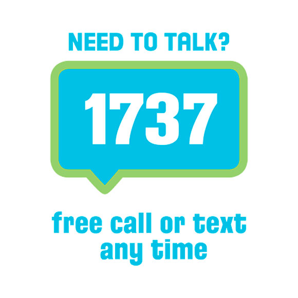

So, if you’re wanting to learn more about how to help someone who’s in that headspace, you’re a legend and you’re in the right place 👍!
TIPS & TOOLS
Here’s some tips and tools to help you get going…
<< Swipe for next tip 👍🏽 >>
<< Click for next tip 👍🏽 >>
Porn can be complex and the person you care about might be feeling ashamed or anxious. Make sure they know you’re not judging, you’re safe to talk to, and you’re there to help.
INFO
Understanding the signs
Working out what’s ‘healthy’ and what’s a problem with porn is tricky. If you’re worried about someone, before making a call or diving in to help, suss out some signs that show they might be struggling. For example, they could…
- get agitated or stressed without porn
- need porn during sex to get aroused
- want to try out stuff in porn without partners being into it
- need more and more porn to be satisfied
- try to watch less porn, but not be able to
- need more violent and extreme porn to get turned on
Understanding why someone starts watching porn
Young people don’t always watch porn to get ‘turned on’ – in fact a big NZ study showed the main reasons are curiosity, accidental, entertainment, sexual pleasure or boredom. Curiosity was number one! 🧐
Young people thought watching porn had pros and cons – and porn’s one of the main places they go to ‘learn about sex’(17). Especially for non-heterosexual young people who don’t always get decent sex ed at school, same-sex porn can feel like a helpful go-to.
Porn can also help some young people deal with negative feelings like stress or anxiety. People with health issues or disabilities can find it harder to hook up with people in real life, so porn feels like a good option.
Manaaki tētahi ki tētahi : Sometimes we can be afraid of what people might think or say about us if we bring up a tricky Kaupapa. That doesn’t make it unimportant – it makes it more important. Think of it this way – you are providing manaaki (looking out) for them!
Understanding why someone might be struggling with porn
Porn can make us feel good ‘in the moment’ – but can get tricky when it’s overused and ends up creating habits and patterns that are hard to break. In a NZ study, it was pretty common for young porn viewers in NZ to want to cut back on how much they watched, at least sometimes(18).
Some young people with high porn usage can also find themselves in patterns where they need lots more porn or more extreme porn to get aroused, or need porn during sex to get things going.
If you want to learn more about how and why young New Zealanders watch porn, checkout The Classification Office survey with 2,000 young people: NZ Youth and Porn
Is ‘porn addiction’ a thing?
The term ‘addiction’ is used casually by young people to describe when they are struggling with porn.
This can mean different things to different people, such as….
- they want to stop watching porn, but find it hard not to
- they feel ashamed they watch porn
- they’ve seen something disturbing in porn and can’t stop thinking about it
- porn is impacting their day e.g. not doing homework or not hanging with friends to watch porn
- they think about porn a lot and get anxious about when they can next watch it
- others are telling them they need to stop
Labelling someone, or yourself as ‘addicted to porn’ can be harmful or not helpful – so we don’t use the term on this site. But if someone uses this term for themselves, it’s important to hear why they’re feeling like this – and direct them to help HERE
Manaaki tētahi ki tētahi : Sometimes we can be afraid of what people might think or say about us if we bring up a tricky Kaupapa. That doesn’t make it unimportant – it makes it more important. Think of it this way – you are providing manaaki (looking out) for them!
Understanding how to help
If someone’s really struggling with their porn use, they might need more than just a listening ear.
There are some great tools that can help someone wanting to change up their porn habits. Check them out NEED HELP or WANT TO STOP WATCHING PORN, BUT CAN’T. Your friend or partner might also need to get some help from the pros.
To school up on professional support services, apps and filters that can help, click HERE
“I’ve noticed I mainly tend to look at porn when I’m quite or very stressed and/or strained as I kind of lose control over my body and mind to some extent. The stress just gets to me and I feel porn is the only real way to feel better, even though it really isn’t. It’s quite hard to explain.”
MALE, 16, OFLC research

VIDEOS
porn habits?
HELP 
YOUTHLINE
24/7 free service designed just for youth. You can call or text to talk about big or small stuff.
Anonymous online chat 7-10pm.
Freephone: 0800 376 633
Text: 234
www.youthline.co.nz
Safe to Talk
If you’ve been affected by sexual harm or are worried about your own behaviour, Safe to Talk provide great 24/7 confidential non-judgmental support and advice with trained counsellors.
Anonymous online chat 24/7.
Freephone: 0800 044 334
Text: 4334
Website/online chat: www.safetotalk.co.nz
Email: [email protected]

1737
If you’re feeling anxious, down or overwhelmed, 1737 offers a free confidential call or text line with trained counsellors 24/7.
Text: 1737
www.1737.org.nz
What’s up?
Whatsup helps young people with heaps of issues like dating, sex, porn, bullying or anxiety. Confidential online chat: 3 -10pm. Freephone counsellors 12-11pm weekdays and 3-11pm on weekends.
Freephone: 0800WHATSUP
www.whatsup.co.nz